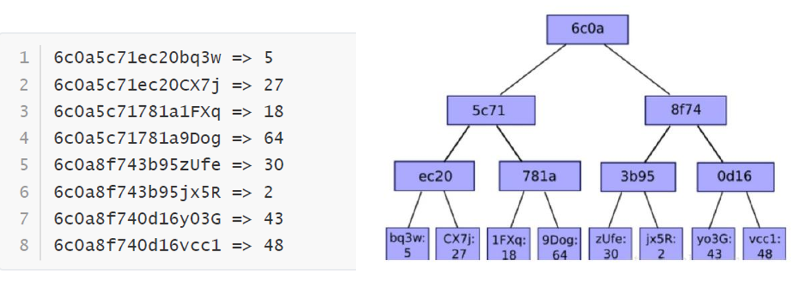
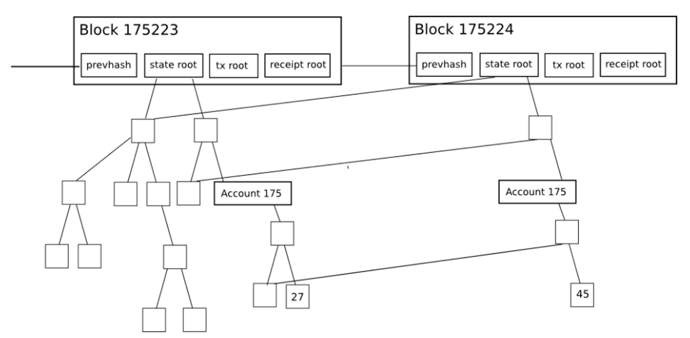

以太坊
约 4362 个字 7 张图片 预计阅读时间 15 分钟
可以在以太坊上部署程序，这是以太坊的基础设想。
简介
以太坊(Ethereum)是一个去中心化、开源、具备智能合约功能的公共区块链平台。以太坊由大量节点组成，节点有账户与之对应，两个账户之间通过发消息进行一笔交易。
交易里携带的信息和实现特定功能的代码叫做智能合约，运行智能合约的环境是以太坊虚拟机(EVM)，EVM类似于Java虚拟机JVM，编译后基于字节码运行，开发时则可以使用高级语言实现。
核心概念
- 节点：以太坊是由网络上的许多节点组成的，每个节点都运行着以太坊虚拟机，通过节点可以进行区块链数据的读写。
- 账户：以太坊中包含两类账户，包括外部账户和合约账户。外部账户由公私钥对控制，合约账户则在区块链上唯一的标识了某个智能合约。
- 交易：交易包括转账交易和合约交易，通过状态转移来标记。
- 智能合约：合约是代码和数据的集合，存在于以太坊区块链的指定地址。如果在执行某个方法时发生异常，则该方法已经执行的操作都会被回滚。
- EVM：以太坊虚拟机是以太坊中智能合约的运行环境，并且是一个沙盒，与外界隔离。
- 验证节点：指以太坊网络中的共识节点，负责记账。
- gas：以太坊上的每一笔交易都有矿工参与，并且都要支付一定费用，这个费用在以太坊中称为gas。
账户
- 外部账户：由区块链外部主体创建，拥有一对公私钥，账户地址没有合约代码。创建外部账户没有成本，可以启动交易，两个外部账户间的交易只能是以太币转账交易。
- 合约账户：由合约交易创建，账户拥有合约代码，地址是代码hash值。创建合约账户需要成本，因为使用了网络存储。智能合约不能主动发起交易，只能在收到一个交易作出响应而发出另一个交易，执行相应的代码逻辑。

外部账户和合约账户的结构是一样的，这样有利于代码复用。
- nonce: 对外部账户，代表该账户发出的交易数，对合约账户，表示该账户创建的合约数量。
- balance: 该账户地址的Wei，$10^{18}Wei=1ETH $
- storageRoot: Merkle Patricia树的根节点hash值 ，该树是该户下存储信息的hash值，缺省为0
- codeHash: 该账户的EVM代码hash值，对于合约账户，是合约代码存储的hash值，对外部账户，是空字符串的hash值。
世界状态
世界状态是所有账户（包括外部账户和合约账户）的状态合集。
- 以太坊本质上是一个基于交易的状态机
- 以太坊由一个初始状态我们称为Gensis
- 状态转换的最小单元是交易
- 每次执行一条或者多条交易后发生状态转换
Gas
在以太坊上，任何引起状态转移的操作都是需要收费的
- 数学运算
- 状态存储
Gas是用来计量以太坊系统资源使用情况的最小计量单位，状态转移中的所有动作都有一个复杂度的衡量公式（比如一次ADD花费3Gas），一次交易执行过程，累积消耗Gas超过发送者预付的总量，交易执行失败。
GasPrice表示发送者预付的Gas价格，Fee=Gas*GasPrice，发送者必须有足够多Ether余额来支付交易费用，交易所产生的手续费作为BlockProducer的经济激励。
交易
交易的分类大致如下：
- 简单支付交易：以太币的账户间转账，不涉及智能合约
- 存证交易：在简单支付交易中把金额置为0，需要存证的内容写在data字段中（对方地址随意，但不能为0）
- 合约部署交易：将对方地址设置为0，就可以将智能合约的程序部署到以太坊网络中，data字段是要部署的合约
- 合约调用交易：对智能合约的调用，data字段是函数名和参数
交易的最新组成如下：
- from：将签署交易的发送方的地址，一个外部账户，因为合约账户无法发送交易
- to：接收者地址(如果是外部账户，就转币值，如果是合约账户，就执行该地址上的合约)
- signature：发送者签名
- nonce：该账户发起的交易计数器
- value：转账的币值(in WEI)
- data：可放置任意数据
- gasLimit：本交易可消耗的gas上限
- maxPriorityFeePerGas：给验证节点的最大小费单价
- maxFeePerGas：支付交易的最大费用单价（包括baseFeePerGas 和 maxPriorityFeePerGas）
data字段
- 在支付交易中，可以用这个字段作付款说明。
- 如果把支付额设置成0（收款方地址不能为0），就可以用来存证。
- 在合约部署交易中（以0作为对方地址），这个字段的内容就是所要部署到以太坊网络中的合约。
- 在合约调用交易中，用这个字段传递调用函数名和参数。
fee
- base fee：该区块内所有交易的最小gas单价，由以太坊软件根据前一区块的gas费用计算调整
- priority fee：交易发起者愿意支付的小费gas单价，小费越高交易能越早被打包
- max fee：发起者愿意支付该交易的最大gas单价
max fee$\geq $base fee + priority fee
以太币与EVM
以太币的铸造和注销
早期以太坊使用的是PoW，后来改成了PoS，由于发币没有上限，如果不进行销毁会造成通货膨胀，故需要注销机制。
铸币是在以太坊账本上创建新以太币的过程，由底层Ethereum协议实现，用户无法创建以太币。以太币是对每个提议的区块的奖励，以及在每个epoch检查点铸造的与达成共识相关的其他验证者活动奖励。
发行的数量取决于验证者的数量和他们质押的以太币数量，理论上应该由验证者平分，但实际上和验证者的表现有关，大约1/8归区块提议者，其余部分分配给其他验证人。区块提议者还可以从交易费和MEV相关收入中获得小费（回收的以太币）。
以太币可以通过称为“燃烧”的过程来销毁，这个过程发生在以太坊的每笔交易中，网络根据交易需求设置的基本gas费用将被销毁，当网络需求很高时，销毁会大于铸造，从而有效控制以太币发行量。
EVM
EVM是指用来解释和执行合约账户字节码的解释器，它是一个基于栈的解释器，有一个固定的指令集，以太坊中所有计算必须是确定性的（没有高精度浮点运算）。EVM是图灵完备的，但是为了防止出现死循环，设置gas机制。
EVM模块主要分三部分：
- 编译合约模块：对底层solc编译器进行一层封装，提供RPC接口。编译智能合约后会返回其二进制码和abi
- Ledger模块：对区块链账户系统进行修改和更新
- EVM执行模块：对交易中的智能合约代码进行解析和执行
区块链
以太坊的分叉非常多，所以在区块中添加了UncleList
区块大小和出块速度
区块大小可变，每个区块的目标大小是容纳至少消费15M gas的交易，但区块的大小将根据网络需求增加或减少，上限是消费30M gas的交易，区块不能任意大保证了性能。
- PoW共识的出块时间平均为15s,Hash函数会产生较多碰撞，产生较多的区块链分叉
- PoS共识出块时间固定位12s（slot）
对于分叉使用GHOST(Greedy Heaviest Observed Subtree)，挑选计算量最大的那条路径。
实际上验证者可以通过共识来更改区块gas 限制，区块中所有交易消耗的gas 总量必须小于区块gas 限制。这很重要，因为它确保块不能任意大。
数据存储
以太坊的Block Header中有三棵树，类似于比特币中的Mekle树：
- stateRoot：存储世界状态，因为以太坊是账户模型
- transactionsRoot：存储交易信息
- recepientsRoot：存储回执信息，因为以太坊很多交易其实不涉及金额变化
上面提及的回执包括以下信息：
- 区块编号
- 区块哈希
- 交易哈希
- 当前交易用掉的gas
- 当前交易执行后当前区块中使用的累计gas
- 执行当前交易时创建的日志（将链上的信息传递出去）
以太坊不同于比特币的UXTO模型，由于账户存在多个属性，且需要经常更新，因此使用Merkle Patricia Tire(MPT)：
- 在增删改后能快速计算树根，而无需重新计算整棵树
- 即使攻击者恶意构造非常深的树，它的深度也是有限的，否则攻击者可以进行Dos攻击
- 树的根植仅取决于数据，而不取决于更新的顺序
Merkle Patricia Tire，结合了Mekle 树和Patricia树（前缀树的改进，将相同前缀合并，避免前缀树过高）。主要是为了解决世界状态的计算问题，因为世界状态在每个区块都在改变，但是每次都只有少部分账户发生变化，如果每个区块都要重新生成Mekle 树，计算的代价会非常大。这里之所以都用MPT，是为了代码复用，方便维护。
如下图所示，节点的排布是由地址决定的，先计算出Patricia树，再计算Mekle树（不过下图只看得出来Patricia树）锁死这颗树的结构，注意实际情况下应该是多叉树，所以算哈希值有可能要拿多个兄弟节点计算。

下面是一个更新的示例，只有右下角的那个账户值从27变到了45，实际只需要更新受影响路径上的hash值，也就是只需要更新4个节点。

下面是MPT的详细展示，看上去很复杂，这里做一些解释：
- 下图中的世界状态是简化的，十六进制地址只有7位
- Extension Node 表示共同的前缀
- Branch Node表示共同前缀的后一位，用于表示分叉
- Leaf Node 表示叶子节点，存储账户余额
- prefix 对于extension node 0表示共享的字符数是偶数，1表示是奇数；对于leaf node 2表示key-end是偶数，3表示是奇数

以太坊直接使用了Level DB，真正的数据都是放在数据库里面的，注意此处把数据存储在数据库里面不等于可以修改，因为以太坊会按照协议去验证这些数据，确保数据的有效性。
共识机制
交易提交
一个交易被提交之后，会发生：
- 计算交易哈希
- 将交易广播到网络，并添加到交易池里面（里面有所有pending的交易）
- 验证者(validator)必须选择自己的交易将它包含在区块里面，以验证交易有效性
- 区块提交后交易就被“固定”了，即不可篡改
以太坊共识
一开始以太坊是PoW共识，采用的哈希算法是SHA3（要消耗1Gb内存），计算哈希很浪费电力，不够环保，所以后来换到了PoS共识，即Gasper共识，需要抵押自己的以太币，所以如今以太坊上已经不存在挖矿的概念了。
Gasper共识主要由两部分组成：
- Casper-FFG：一种改进的PBFT算法
- LMD-GHOST：分叉选择算法
PBFT 算法
Quorum（集群） 组成包含 3f+1 个节点，所以至少四个节点（不包含client）：
- client：只发起交易，不参与共识
- replica：参与共识
每个共识阶段称为一个 view：
- 有一个replica作为领导，称作 primery(lead)
- 其它replica都是backup
共识过程：
- Request：Clinet发起共识请求
- Pre-prepare：primary验证请求，打包消息，发给其它节点
- Prepare：其它节点验证消息，投票
- Commit：Primary 收到2f+1个节点赞成票后（即超过2/3支持），完成共识，通知所有节点，反馈client
下图是一个PBFT的流程示意图：
- Replica 3 将交易打包进区块(不一定是Primary)后发给其它节点
- Primary 是会改变的，比如原Primary死机了
- Primary在广播的时就代表已经投出赞成票了
- Rplica在投票时要将结果发给所有节点

投票前后的节点数不能改变，参与验证的节点也不能太多，不然开销也很大，但是以太坊是公链，所以需要一些机制限制参与验证的节点数。
PoS 共识
验证者(validator)以ETH的形式将资本抵押给以太坊上的一个智能合约，如果验证者行为不诚实或者懒惰，抵押的ETH可被销毁。验证者负责检查通过网络传播的新块是否有效，并偶尔创建和传播新块。
要成为验证者，用户必须将32ETH存入存款合约并运行三个软件：执行客户端，共识客户端和验证器，然后其会加入一个激活队列，从以太坊网络上的对等方接收新的区块，重新执行区块中交付的交易，并检查区块签名以保证区块有效，没有问题则发送支持该块的投票。（称为证明attestation）
一个人虽然可以发起多个验证者，不过他还是做不到操控以太坊共识，原因见后文（选部分验证者组成委员会）。
Beacon Chain
信标链是专门做共识的链，这和以太坊的共识机制改变有关，规定：
- 每12s为一个时段slot
- 每32个slot为一个纪元epoch（6.4分钟）
- 每个slot产生一个新区块，但可能没有
- 信标链的创世区块在slot 0

PBFT的流程在此处体现如下：
- 每个时段slot会有一组验证者组成委员会
- 其中一个验证者被随机选中，称为区块的proposer（即上文PBFT的Primary），发出区块
- 委员会的其他成员投票attestation，如2/3支持则该区块发布
为了保证公平性，避免有人控制控制，极大减小中心化风险，要求：
- 每个slot至少有一个委员会，成员至少128个验证者
- 活跃验证者集被随机选择成员组成每个slot的委员会和proposer
- 一个epoch中的32个slot的委员会是同时用随机函数选择的，一个验证者只能在一个slot中出现
检查点
检查点是epoch的第一个slot中的一个区块，如果不存在，则检查点是前面最近的区块，检查点主要是为了减少分叉，因为在PoS共识下已经不存在计算量的高低之分了，所以确定主链要另想办法，本意是选择钱最多的链。

- 当验证者提交LMD GHOST投票时，他投票当前epoch的checkpoint，称为target
- 这个投票称为Casper FFG投票，还需要包含前一个checkpoint，称为source
一个epoch结束时，如果它的checkpoint或2/3验证者投票支持，其状态变为justified，一个justified的checkpoint如果其后续checkpoint状态改为justified，则它的状态升级为finalized，所以一般情况（因为区块链是分布式软件，所以不同节点的时间肯定存在差异）下一个checkpoint经过2个epoch后（12.8分钟）变为finalized
合并
信标链是为了将以太坊的共识从PoW过渡到PoS而引入的，信标链是一个“空”区块链，合并时，信标链接受来自以太坊执行客户端的交易数据，将它们打包成区块，然后使用基于PoS共识机制组织成区块链。同时，原以太坊客户端关闭挖矿、区块传播和共识逻辑，将其全部交给信标链。
此事件称为合并，之后就不再有信标链和原以太坊两个区块链，只有一个PoS以太坊。故现在每个节点需要两个客户端：共识客户端（信标链）和执行客户端（原以太坊），，共识客户端处理区块传播和共识逻辑，执行客户端负责交易传播和执行，并管理以太坊的状态。